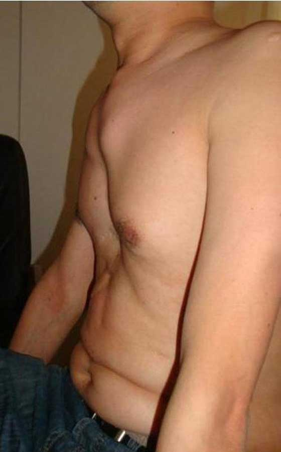
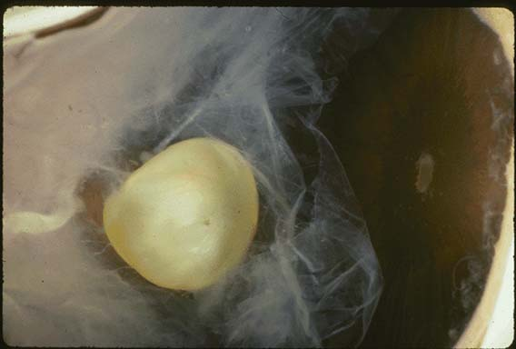
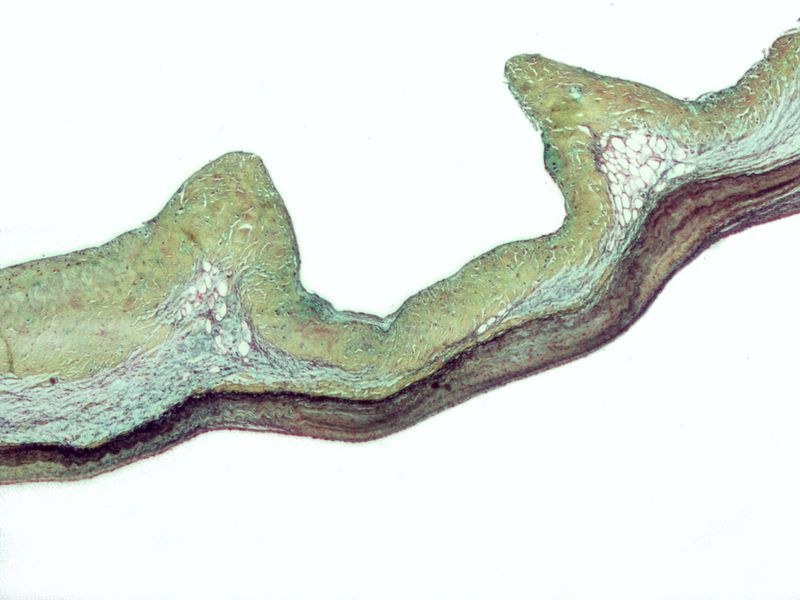
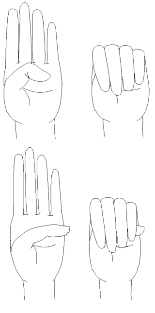

Генетичне порушення розвитку сполучної тканинию Ступінь порушення варіює. Хворі синдромом Марфана зазвичай є високими, худими, з довгими руками, ногами, пальцями і ступнями, також для них характерні надзвичайно гнучкі суглоби і сколіоз Найбільш серйозні ускладнення зустрічаються з боку аорти і мітрального клапана - у хворих часто діагностують аневризму аорти та недостатність мітрального клапана через пролапс його задньої стулки Інші органи, в яких можуть виникати зміни включають легені, очі, кістки та хребет. Синдром Марфана — автосомно-домінантне захворювання. Приблизно у 75 % випадків воно є успадковане, решта 25 % спричинені випадковими мутаціями.Мутація зазвичай виникає у гені, який містить інформацію про синтез фібриліну-1, що викликає порушенням структури сполучної тканини.Діагноз про наявність синдрому Марфана у хворого часто базується на використанні критерій Гента. Немає причинної медичної терапії від синдрому Марфана. Більшість хворих живуть звичайно, використовуючи симптоматичне лікування. Воно часто включає використання бета блокаторів, таких як пропранолол або, у разі наявної сенсабілізації до нього, блокаторів кальцієвих каналів та ACE інгібіторів. Хірургічне втручання може бути необхідне для корекції аневризми аорти та мітрального клапана. До загальних рекомендацій для хворих синдромом Марфана відносять уникнення виконання важких фізичних вправ. Зустрічається рідко — 1:3.000-10.000 від загальної кількості новонароджених мають синдром Марфана. Зустрічається однаково часто як серед чоловіків так і серед жінок, як і всі автосомно-домінантні захворювання.[3] Частота виникнення не пов'язана з расою і з регіоном.Синдром названий в честь Антуана Марфана, французького педіатра, який вперше описав захворювання у 1896.
Клінічні ознаки
Сьогодні відомо більше 30 різних ознак та симптомів, за допомогою яких можна діагностувати синдром Марфана. Найбільш виразні з них асоційовані з кістковою, серцевосудинною та зоровою системами, проте часто буває уражена вся сполучна тканина.
Кісткова система
Більшість видимих ознак пов'язані з кістковою системою. Багато хворих синдромом Марфана ростом вище середнього зріст, мають легку непропорційність, довгі, худі кінцівки, тонкі зап'ястя з довгими пальцями і ступнями (арахнодактилія). Окрім цього, хворі Марфаном можуть мати сколіоз, грудний лордоз, деформовану груднину,  Деформація груднини, pectus excavatum, у хворого сиднромом Марфана високу гнучкість суглобів, високо розміщену піднебінну кістку з деформованим зубним рядом та порушенням привкусу, плоскостопість, сутулість і розтяжки на шкірі. Ці порушення можуть спричиняти біль в суглобах, кістках і м'язах. Деякі хворі синдромом Марфана мають порушення мовлення, викликаним високим піднебінням і малими щелепами. Часто у хворих виникає остеоартрит. Інші ознаки включають обмежений рух стегон, через атипове розміщення голівки стегнової кістки в кульшовому суглобі
Зорова система
При синдромі Марфана порушення зорової системи різноманітні, проте в більшості зустрічається дислокація кришталика.  Дислокація кришталика, при синдромі Марфана, з його ниркоподібною формою і розміщенням біля циліарного тіла. Це трапляється черезслабкість війчастого пояска (циннової зв'язки) - сполучнотканинних тяжів, які взаєморозташовують кришталик в оці. Війчастий поясок містить у великій кількості фібрилін-1, що і результує у підвищену пластичність пояска при порушеннях конформації білка. Нижні шари циннової зв'язки мають найбільш виражену дисфункцію, що власне і спричиняє рух кришталика вгору і назовні, у більшості хворих. При синдромі Марфана супутніми є: близькозорість, проте трапляється і далекозорість, особливо у випадках дислокації кришталика всередину по відношенню до передньої камери ока. Сублюксація (часткова дислокація) кришталика визначається клінічно у 80 % пацієнтів за допомогою сліт-ламп біомікроскопа. Інші ознаки та симптоми пов'язані з враженнями системи зору включають в себе збільшення кривизни очного яблука, міопію, страбізм, ексотропію та езотропію
Серцево-судинна система
Життєво загрозливі ознаки і симптоми, пов'язані з синдромом Марфана пов'язані з порушеннями серцево-судинної системи наступні: слабість, задишка, тахікардія (пришвидшене серцебиття), загруднинні болі, які деколи іррадіюють в спину, плече або руку. При порушеннях периферичної гемодинаміки у хворих синдромом Марфана може бути виражена гіпотермія кінцівок. Порушення серцевих тонів, провідної системи серця, а також симптоматика серцевої ішемії повинні бути сигналом для лікаря до наступних обстежень серцево-судинної системи. Для хворих синдромом Марфана є типовим дегенерація медії аортального та мітрального клапанів, що спричиняє недостатність (регургітацію) останніх. Однак найважливішою ознакою для діагностики синдрому Марфана залишається аневризма (розширення) аорти. Відомі випадки безсимптоматичного перебігу аневризми аорти, яка після повної дегенерації медії розшаровувалась, що власне і спричиняє підвищену смертність хворих. Через порушення сполучної тканини існує підвищений ризик дислокації мітрального протезу.[10] Через це надається перевага хірургічному ремоделюванню над протезуванням клапана. У випадку протезування аорти рекомендуються клапаннозбережувальні операції (операція Девіда тощо).
Легені
Легенева симптоматика не є головною особливістю перебігу синдрому Марфана,[11] проте деколи може виникати спонтанний пневмоторакс. [12] Під час спонтанного одностороннього пневмотораксу, повітря потрапляє у плевральний простір між грудною кліткою і легенями. Через це виникає компресія і навіть колапс легень. Це супроводжується відчуттям хворого болю, задишки, ціанозу і навіть смерть. Інші легеневі прояви синдрому Марфана включають нічне апное[13] та ідіопатичні обструктивні легеневі захворювання.[14] Патологічні зміни у легенях включають кистозні зміни, емфізему, пневмонії, бронхіектаз, верхівковий фіброз і вроджені зміни, такі як гіпоплазія середньої частки.
Нервова система
Дуральна ектазія - ослаблення сполучної тканини твердої оболонки спинного мозку часто є причиною зниження якості життя хворого. Це ускладнення часто є недіагностоване, внаслідок відсутності явних ознак. Симптоматика наступна: біль у нижній частині спини, біль ніг, біль живота, інші неврологічні симптоми у нижніх кінцівках та навіть головні болі. Ці симптоми більш виражені при горизонтальному положенні хворого. Дуральна ектазія в ранніх стадіях розвитку рідко діагностується за допомогою рентген-моніторингу. У випадку магнітно-резонансного моніторування проявляється розширеною твердою оболонкою поперекових хребців.[15] Інші хребцеві проблеми, пов'язані з синдромом Марфана включають дегенерацію хребцевих дисків, спінальні кисти і дисфункцію автономної нервової системи.
Патогенез
Синдром Марфана спричиняється мутаціями FBN1 гена 15 хромосоми,[19] що кодує фібрилін-1 — глікопротеїновий компонент екстрацелюлярного матриксу. Фібрилін-1 є необхідний для правильного формування екстрацелюлярного матриксу, а саме біогенезу і підтримання еластичних волокон. Екстрацелюлярний матрикс є критично необхідний для структурної інтеграції сполучної тканини, а також слугує резервуаром для факторів росту. [16] Еластичні волокна існують у кожному куточку людського тіла, проте найважливішу функцію виконують в аорті, сухожилках і війчастому пояску ока; тому ці зони і є найбільш вразливі.  Мікропрепарат, на якому демонструється міксоматозна дегенерація аортального клапану, який часто зустрічається під час синдрому Марфана Трансгенетичні миші-носії єдиної копії мутантного фібриліну-1, мутації схожої на ту, яка виникає в людському гені, викликає у мишей розвиток синдрому Марфана. Миші з цим дефектним геном мають схожі прояви з людськими. Окрім цього, зниження вмісту нормального фібриліну-1 викликає Марфан-пов'язані захворювання у мишей. Трансформуючий фактор росту бета (TGF-β) відіграє важливу роль у розвитку синдрому Марфана. Фібрилін-1 безпосередньо повязаний з неактивною формою TGF-β, що зберігає його неактивність результуючи у відсутності біологічної активності останнього. Найпростіша модель синдрому Марфана виглядає приблизно так: зниження рівня фібриліну-1 викликає підвищення рівня TGF-β через зворотній негативний зв'язок синтезу останнього з зв'язуванням з рецепторами. Хоча не є доведено взаємозв'язок TGF-β і специфічного патогенезу цього захворювання, проте доведено виникнення запальної реакції з вивільненням базофільних протеаз, що власне і спричиняє повільну деградацію еластичних волокон та інших компонентів екстрацелюлярного матриксу. Важливість TGF-β у формування цього патологічного механізму була доведена після відкриття синдрому Луїза-Діца, який викликаний змінами TGFβR2 гена 3 хромосоми, що кодує рецепторний протеїн до TGF-β.[20] Синдром Марфана часто путається з синдромом Луїза-Діца, через практично однаковий клінічний перебіг обох патологій.[21]
Діагностика
Діагностичні критерії синдрому марфана були міжнародно затвердженими у 1996.[22] Діагноз синдрому Марфана базується на основі родинної історії і поєднання основних та другорядних індикаторів порушення, що рідко зустрічається в більшості популяції, наприклад: чотири ознаки порушень кісткової системи з однією або більше ознаками інших систем організму, таких як зорового аналізатора чи серцево-судинної, які одночасно можна діагностувати у одного хворого. Наступні стани можуть виникати внаслідок синдрому Марфана, проте зустрічаються у людей без цього синдрому. Аневризма або розширення аорти : Арахнодактилія GERD Двохстулковий аортальний клапан Кисти Кистозний некроз медії Дегенеративне захворювання хребців Викривлення носової перегородки[23] Дуральна ектазія Ранні катаракти Рання глаукома[24] Ранній остеоартрит[25] Ектопія кришталиків Емфізема[26] Колобома очної райдужки[27] Вищий середнього ріст Тахікардія[28] Кили Високо розміщена піднебінна кістка Підвищена рухливість суглобів Кіфоз Недостатність клапанів серця Мальоклюзія Мікрогнатія (мала нижня щелепа)[27] Пролапс мітрального клапана Міопія (близькозорість) Обструктивні захворювання легень Остеопенія(низька кісткова щільність)[29] Pectus carinatum або екскавація Плоскостопість[30] Пневмоторакс Відшарування сітківки Сколіоз Апное під час сну(нічне)[13] Шкірні розтяжки[31] Порушення розміщення зубів[31] Довге, худе лице[27] Темпоромандібулярна дисфункціяT[32] Revised Ghent nosology[ред. • ред. код] У 2010 нозологія Гента була переглянута і нові діагностичні критерії додалися до попередньої домовленості 1996. 7 нових критерій можуть бути використані для діагностики: У випадку відсутності родинної історії синдрому Марфана: -Z-score кореня аорти ≥ 2 і вивих кришталика; -Z-score кореня аорти≥ 2 і мутація FBN1 гена; -Z-score кореня аорти ≥ 2 і системна оцінка* > 7 points; -Вивих кришталика і мутація FBN1 з діагностованою вадою аорти. У випадку наявності синдрому Марфана в родичів: -Вивих кришталика; -Системна оцінка* ≥ 7; -Z-score кореня аорти≥ 2. Системна оцінка: -Зап'ясткова і долонна ознака = 3 (у випадку наявності лише однієї = 1) -Pectus carinatum формація = 2 (pectus excavatum або асиметрія грудної клітки = 1) -Плоскостопість = 2 -Дуральна ектазія = 2 -Protrusio acetabuli = 2 -Пневмоторакс= 2 -Зменшення співвідношення верхньої і нижньої частини тіла і збільшення співвідношення довжини рук до висоти і тяжкий сколіоз = 1 -Сколіоз або кіфоз = 1 -Знижена рухливість ліктя = 1 -Лицеві ознаки (3/5) = 1 (доліхосефалія, енофтальмоз, звисаючі повіки, гіпоплазія молярів, ретрогнатія) -Розтяжки шкіри (стрії) = 1 -Міопія > 3 diopters = 1 -Пролапс мітрального задньої стулки мітрального клапана 1⁄4 1 -Долонна ознака (ознака Стайнберга) визначається, якщо у пацієнта гіпермобільний ліктьово-зап'ястний і променево-зап'ястний суглоби. Зап'ясткова ознака (ознака Волкера) позитивна, якщо пацієнт може обхопити однією рукою другу, торкаючись великим пальцем мізинця.  Ознаки долоні: згори — нормальна долоня, нижче — долоня хворого синдромом Марфана
Диференційна діагностика
Багато різних порушень можуть викликати симптоматику синдрому Марфана.[35] Генетичні дослідження і оцінка різних ознак та симптомів дозволяють їх відрізнити. Наступні захворювання схожі за перебігом на синдром Марфана: -Вроджена арахнодактилія або синдром Білса; -Синдром Ехлера-Данлоса; -Гомоцистинурія; -Синдром Луїса-Дієца; -MASS фенотип; -Множинна ендокринна неоплазія, тип 2B; -Синдром Шпрінтцена-Голдберга[36]; -Синдром Стіклера.
Лікування
Немає причинного лікування синдрому Марфана, проте впродовж останніх тривалість життя хворих значно покращилось і зараз схоже до життя звичайної людини.[37] Синдром лікується симптоматично, по відношенню до ушкоджень різних органів. У дітей медикаментозно запобігається дилятація (розширення) аорти. Регулярний огляд у кардіолога є необхідним для спостереження серцевих клапанів і аорти. Головною ціллю у лікуванні є сповільнення прогресії дилятації аорти і ушкодження серцевих клапанів, за допомогою профілактики порушень провідної системи серця (аритмій, тахікардій) і зменшення системного кров'яного тиску.
Медикаментозна терапія
Медикаментозна терапія часто включає бета-блокатори, такі як пропранолол, або у разі нетолерантності хворого до нього, блокаторів кальцієвих каналів та ACE інгібіторів .[ Через те, що антагоністи ангіотензин-2 рецепторів також знижують вміст TGF-β ці препарати досліджувались на пацієнтах з тяжким перебігом с индрому Марфана і викликало сповільнення розширення аорти.[38] Проте, нещодавні дослідження показали схожі результати після використання ARB, лозартану і сучасної бета-блокової терапії, наприклад препарату атенолол
Фізична активність
Американська Асоціація Серця(The American Heart Association) має наступні рекомендації для хворих синдромом Марфана з відсутньою або малою дилятацією аорти: -Скоріше дозволені заняття: боулінг, гольф, снорклінг, спортивне ходіння, тредміл.; -Середній ризик несуть наступні: баскетбол, рокетбол, сквош, біг, катання на лижах, футбол, тенніс, бейсбол, катання на мотоциклі, кінний спорт.; -Високий ризик несуть наступні: бодібілдинг, вайтліфтинг, хокей, скалелазання, віндсерфінг, серфінг, скубадайвінг.
Хірургічні втручання
Якщо дилятація аорти прогресує, викликаючи розриву або травми кореня аорти, а також призводить до тяжкої недостатності аортального або інших клапанів, тоді хірургічне втручання стає необхідним. Протезування аорти це складна операція, проте виконана планово має значно більше шансів на успіх. Саме втручання залежить від тяжкості стану пацієнта і зараз існують операції зі збереженням клапанного апарату.[40] Існує тенденція і до збільшення кількості інших судинних операцій у хворих синдромом Марфана, через збільшення тривалості життя останніх, наприклад: протезування низхідної частини грудної аорти а також інших судин. Кісткові і зорові прояви синдрому Марфана також можуть бути складними, проте ніколи життєво небезпечними. Ці симптоми зазвичай лікуються типово, наприклад різними знеболюючими або м'язовими релаксантами. Через те, що синдром Марфана може викликати асимптоматичні спинні деформації, різного роду хребтові операції мусять виконуватись з особливою обережністю, незважаючи на складність самої операції. Лікування спонтанного пневмотораксу залежить від кількості повітря у плевральному просторі і перебігу ускладнення у конкретного хворого. Невеликий пневмоторакс може самовирішитись без активного втручання протяго 1-2 тижнів. Рецидивуючі пневмоторакси можуть потребувати хірургічного втручання. Тяжкі пневмоторакси вимагають грудної дренажної системи, яку використовують протягом декількох днів. Великі пневмоторакси є ургентними станами, які вимагають ургентної декомпресії.
Вагітність
Протягом вагітності, навіть при відсутності серцево-судинних аномалій, жінки з синдромом Марфана мають високий ризик з розшарування аорти, який часто є фатальний при відсутності негайного хірургічного втручання. Жінки з синдромом Марфана повинні проходити ехокардіографічне обстеження кожні 6-10 тижнів впродовж вагітності, для оцінки діаметра кореня аорти. Для більшості жінок виконується кесарів розтин.[41] Синдром Марфана експресується домінантно. Це означає, що дитина одного з батьків, який переносить мутований ген, має 50 % шанс народитись хворою. У 1996 році був виконаний перший передімплантаційний генетичний тест;[42] це означає, що на ранньому етапі вагітності було проведене генетичне тестування, для визначення і знищення ембріона у випадку наявності в нього мутованого гена, відповідального за синтез фібрилін-1.
Розроблено-Бузінська Олена Олександрівна